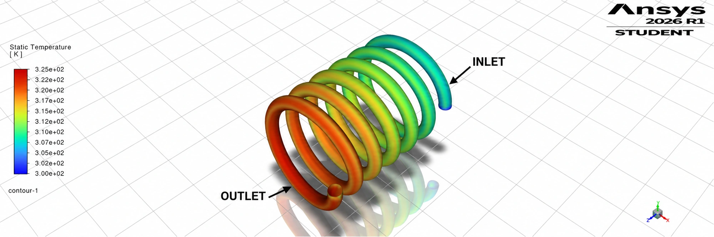
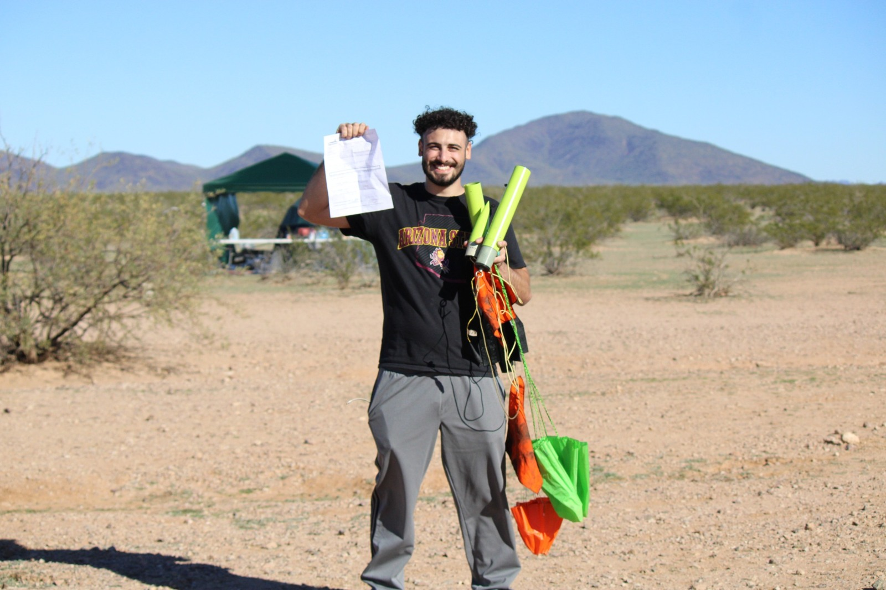

Design & manufacturing
SolidWorks, CAD assemblies, additive manufacturing, tolerance analysis, prototyping, materials selection.
Mechanical engineering portfolio
I'm a mechanical engineering student at Arizona State University graduating in December 2026. I enjoy designing and building mechanical systems, working with manufacturing equipment, and solving problems through hands-on testing. I'm especially interested in semiconductor manufacturing, automation and product development.
Selected engineering work
Here are some of the projects I have worked on throughout my time at ASU, at work and on my own.

My team and I designed and built a hand-cranked transmission that demonstrated all six gear modes.
View project →My team and I developed an automated irrigation system using soil moisture sensors, a solenoid valve and flow monitoring.
View project →
I used ANSYS Fluent to study heat transfer, compressible flow, ventilation and multiphase flow.
View project →
I designed and built Key Lime Pie, earned my Level 1 and Level 2 certifications, and worked on Banana Split with Sun Devil Rocketry.
View project →I maintained industrial manufacturing equipment, troubleshot failures and designed replacement machine components.
View project →I worked on a camera tracking system using a Raspberry Pi and Arduino.
View project →Technical toolkit
SolidWorks, CAD assemblies, additive manufacturing, tolerance analysis, prototyping, materials selection.
ANSYS Fluent, MATLAB, experimental testing, data interpretation and technical documentation.
Industrial machinery troubleshooting, VFD configuration, component redesign, Arduino and Raspberry Pi.
Equipment reliability, semiconductor manufacturing, process improvement and product development.
Contact
I'm interested in engineering opportunities in semiconductor manufacturing, equipment engineering and product development. Feel free to reach out to me on LinkedIn.